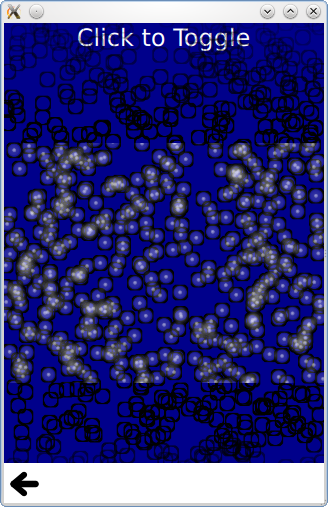

QtQuick.Particles Examples - Affectors
This is a collection of examples using Affectors in the QML particle system.

This is a collection of small QML examples relating to using Affectors in the particle system. Each example is a small QML file emphasizing a particular element or feature.
Dynamic comparison compares using the particle system to getting a similar effect with the following code that dynamically instantiates Image elements.
Note how the Image elements are not able to be randomly colorized.
Start and Stop simply sets the running and paused states of a ParticleSystem. While the system does not perform any simulation when stopped or paused, a restart restarts the simulation from the beginning, while unpausing resumes the simulation from where it was.
Timed group changes is an example that highlights the ParticleGroup element. While normally referring to groups with a string name is sufficient, additional effects can be done by setting properties on groups. The first group has a variable duration on it, but always transitions to the second group.
The second group has a TrailEmitter on it, and a fixed duration for emitting into the third group. By placing the TrailEmitter as a direct child of the ParticleGroup, it automatically selects that group to follow.
The third group has an Affector as a direct child, which makes the affector automatically target this group. The affector means that as soon as particles enter this group, a burst function can be called on another emitter, using the x,y positions of this particle.
If TrailEmitter does not suit your needs for multiple emitters, you can also dynamically create Emitters while still using the same ParticleSystem and image particle
Note that this effect, a flurry of flying rainbow spears, would be better served with TrailEmitter. It is only done with dynamic emitters in this example to show the concept more simply.
Multiple Painters shows how to control paint ordering of individual particles. While the paint ordering of particles within one ImagePainter is not strictly defined, ImageParticle elements follow the normal Z-ordering rules for QtQuick items. This example allow you to paint the inside of the particles above the black borders using a pair of ImageParticles each painting different parts of the same logical particle.
Files:
- particles/system/system.qml
- particles/system/content/dynamiccomparison.qml
- particles/system/content/dynamicemitters.qml
- particles/system/content/multiplepainters.qml
- particles/system/content/startstop.qml
- particles/system/content/timedgroupchanges.qml
- particles/system/main.cpp
- particles/system/system.pro
- particles/system/system.qmlproject
- particles/system/system.qrc